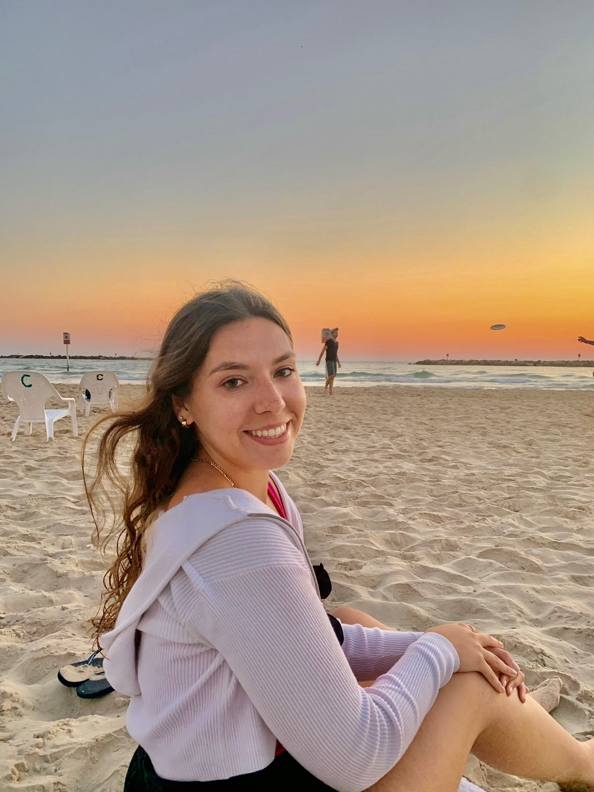

Hi, my name is Andie Carroll and I can't wait to tell you about my past summer in Tel Aviv. But first, here is a little bit about me! I'm a Junior at the University of Michigan studying UX Design and Economics. I'm from New Canaan, CT and live with my mom and sister.
Some of my hobbies include skiing, hiking, and cooking. I love the outdoors and became obsessed with long walks during quarantine. I love hanging out with my friends and I hope to travel around the world through out my life.
Fun fact about me is that before I went to Israel this summer I spent the last 11 years going to sleep away camp with my best friends in Penn Yan, NY. Here they are to the left.
